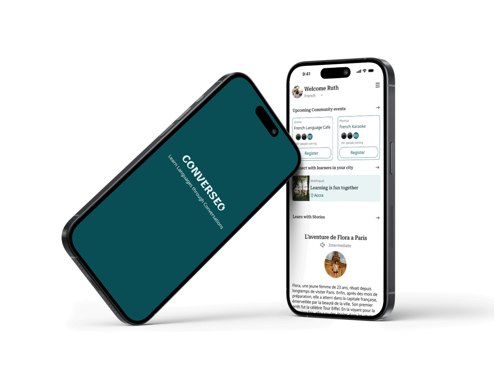

Converseo
Converseo is an AI-powered and community centered language learning app focused on solving the hardest problem most language learners face: actually speaking the language.

The Problem
Learning a new language is a journey that many embark on, but few complete. This is
partly because a
major part of
learning a new language is actually practicing it, and most learners live in an
environment where very few people speak the language they want to learn. The journey can
also be isolating and lonely.
Current apps focus too heavily on vocabulary memorization
rather than conversational application.
User Insights
I conducted both user interviews and surveys with some language learners and found some recurring themes:
- Forgetting what was learnt because of lack of practice
- Not having anyone to speak the language with
- Feel entirely disconnected from real-world conversation
User Persona
Understanding the anxieties of an ambitious language learner to drive an empathetic design methodology.
.png)
Project Goals
- Make personal learning easier using AI
- Making the language learning process a little less lonely by leveraging the power of communities
- Help people find language learning partners
The Solution
A mobile app that helps people learn faster with 3 major features: Ai chatbot with guided prompts, Stories to test understanding and comprehension, and communities to meet fellow learners and practice in reall life scenarios.
Final Designs
Take a look at the polished interface designed to eliminate the anxiety of learning a new language.


Key Design Decisions
Familiar Chat UI
A low-pressure chat interface that mimics popular messaging apps, bringing instant familiarity to the user
Guided Prompts
Guided prompts to help beginners who might not know how to start a conversation
Gentle Color Palette
Bright neon language apps often increase heart rate and urgency. I settled on muted, grounding colors to reinforce an environment of patience and calm.
.png)